Cours¶
Introduction [1]¶
La théorie des probabilités fournit des modèles mathématiques permettant l’étude d’expériences dont le résultat ne peut être prévu avec une totale certitude. En voici quelques exemples :
Bien que le résultat précis de chacune de ces expériences soit
imprévisible, l’observation et l’intuition nous amènent à penser que ces
phénomènes obéissent à certaines lois. Par exemple si on jette 6000 fois
le dé, on s’attend à ce que le nombre d’apparitions de la face « 3 »
soit voisin de 1000. Si on met en service 100 ampoules, leurs durées de
vie observées seront concentrées autour d’une certaine valeur moyenne.
La théorie des probabilités permet de donner un sens précis à ces
considérations un peu vagues. La statistique permet de confronter
les modèles probabilistes avec la réalité observée afin de les valider
ou de les invalider. Par exemple si quelqu’un a 60 bonnes réponses sur
100 au questionnaire, est-il légitime de considérer qu’il a « mieux fait
» que le hasard ? Sur les \(n\) objets prélevés en sortie de chaîne, \(k\)
sont défectueux. Peut-on en déduire quelque chose sur la qualité de la
production globale ?
Réflexions sur le hasard¶
Simuler le hasard¶
Hasard : de l’arabe az-zahr (dé à jouer), nommé d’après l’arabe zahr (« fleur ») car la face gagnante du dé portait une fleur.
Aléatoire: du latin aleatorius « qui concerne le jeu (de hasard) »
“Choisir un nombre au hasard” paraît de prime abord assez simple. Il
n’en est rien ! La simulation de l’aléatoire est pourtant un enjeu de
taille pour de nombreuses applications (cryptologie, jeux de hasard,
simulations et recherches, tirages au sort, ou encore pour des projets
artistiques). La plupart des programmes ont aujourd’hui accès à une
“source” de hasard relativement performante (elle l’est plus ou moins
selon les OS et les langages), mais celle-ci ne fait que produire, pour
un nombre limité de bits, une simulation qui paraît, pour ce nombre,
relativement aléatoire. Mais elle n’est pas, par définition, aléatoire.
En effet, un ordinateur, par principe, ne fonctionne que de façon
déterministe (il réalise une suite d’instructions qui lui est confiée),
à moins d’être dysfonctionnel. Pour lui faire simuler au mieux le
hasard, le plus courant est d’utiliser son horloge propre interne, et à
partir de la mesure faite, de transformer successivement les nombres
obtenus pour avoir une longue suite de bits “au hasard”. Ce hasard peut
être de plus ou moins bonne qualité.
Pour obtenir un hasard de meilleure performance, il devient nécessaire
de se baser sur des phénomènes naturels: bruit électromagnétique,
radioactivité, phénomènes basés sur la mécanique quantique, … Des
projets de ce genre existent, et offrent ou vendent les suites
aléatoires “fabriquées”. On citera par exemple Random.org et
HotBits.
Un développeur a conduit le test ci-dessous pour “tester” de façon
visuelle la qualité de deux générateurs de nombres aléatoires: un “réel”
basé sur un phénomène physique, et un “pseudo-aléatoire”, calculé par
une machine sur la base d’un algorithme.[2]
 Image obtenue grâce à une séquence aléatoire produite par le générateur de nombres aléatoire “Random.org”
Image obtenue grâce à une séquence aléatoire produite par le générateur de nombres aléatoire “Random.org”
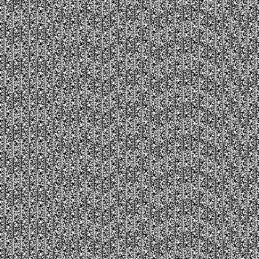\ Image obtenue grâce à un générateur de nombres pseudo-aléatoires (Windows, php)
Source: http://boallen.com/random-numbers.html
Un exemple d’utilisation: un chercheur étudie le procédé d’infection de virus sur des cellules, et qui a pour cela besoin de simuler le comportement alétoire de dizaines de milliers de cellules et de centaines de milliers de cellules. Un générateur de nombres aléatoires performant devient alors indispensable.[3] A notre échelle, la fonction ALEA() d’excel sera largement suffisante !
L’effet “rateau”¶
Dans les images ci-dessous, laquelle est celle dont la répartition est la plus conforme au hasard pur ?[4]
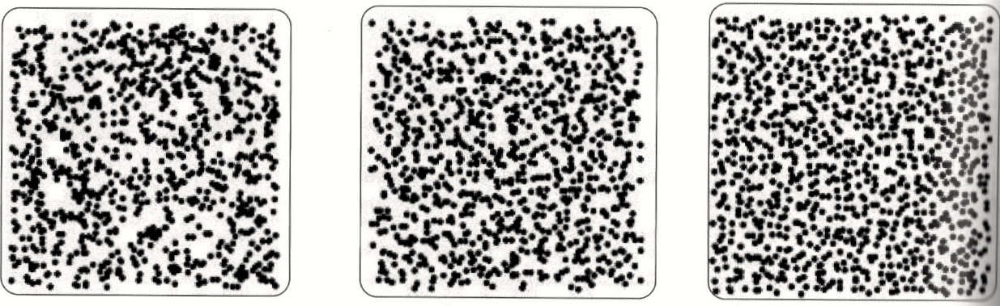
Notre imaginaire nous trompe facilement sur ce à quoi ressemble un
hasard pur (tirage uniforme), et tend à le confondre avec une
répartition uniforme. Nous sommes habitués, dans de nombreuses
situations naturelles et courantes, à une répartitions relativement
homogènes: dans le métro chacun s’écarte des autres pour lui laisser une
zone de confort minimale, les arbres poussent à des distances homogènes
les uns des autres pour ne pas se priver mutuellement de lumière, les
poissons dans un banc et les oiseaux dans une nuée, se positionnent de
façon à ne pas s’entrechoquer tout en profitant de leur influence
mutuelle, …
Cependant la seule image produite à l’aide s’une série de tirages
uniformes indépendants (et donc représentant un hasard pur) est la
première: les deux autres ont été obtenues grâce à un procédé qui étale
artificiellement les données.[5]
Cette attente excessive d’étalement est appelé l’effet râteau.
Attention donc, un tirage uniforme donne une répartition non
uniforme !
Eléments de vocabulaire et Notions clés¶
L’objectif de ce chapitre est définir la notion de variable aléatoire et de rappeler les principales lois de probabilité. Commençons par introduire certaines notions à l’aide d’un exemple.
Ensemble des éventualités, Variable aléatoire¶
Soit un jeu de lancer de pièce, où l’on observe le résultat du lancer:
pile, ou face. Notons \(\Omega\) l’ensemble des évènements élémentaires
possibles, composé des évènements élémentaires notés \(\omega\). Ici on
aura par exemple \(\Omega=\{pile,face\}\), avec les deux évènements
élémentaires \(\omega_{1}=pile\) et \(\omega_{2}=face\).
Il faut maintenant décrire les résultats possibles: codons chacun de ces
évènement à l’aide de chiffre : on attribue un \(0\) pour le résultat
“pile” et un \(1\) pour le résultat “face”.
On notera \(X\) cette fonction donnant le résultat en fonction de l’évènement élémentaire: on l’appelle variable aléatoire: \(X : \omega \in \Omega \mapsto X(\omega) \in \mathbb R,\)
Ainsi, dans notre exemple \(X(\omega)\) sera un élément de l’ensemble
\(\{0,1\}\).
Exemples
On jette deux dés distincts et on s’intéresse à la somme des points. On note \(X\) cette variable aléatoire, elle est définie par:
\(\begin{aligned} X : \quad &\Omega &\rightarrow &\quad\mathbb R\quad\text{ avec }\Omega = \{(1, 1),(1, 2), . . . ,(6, 5),(6, 6)\}\\ &(\omega_{1},\omega_{2}) &\rightarrow &\quad\omega_{1}+\omega_{2} \end{aligned}\)
L’ensemble des valeurs possibles de \(X\) est \(\{2, 3, . . . , 12\}\).
2. On lance toujours deux dés, mais cette fois on s’intéresse au plus
grand chiffre \(Y\) obtenu. On a alors: \(\begin{aligned}
Y : \quad &\Omega &\rightarrow &\quad\mathbb R\quad\text{ avec }\Omega = \{(1, 1),(1, 2), . . . ,(6, 5),(6, 6)\}\\
&(\omega_{1},\omega_{2}) &\rightarrow &\quad max(\omega_{1},\omega_{2})
\end{aligned}\)
La variable \(Y\) est à valeurs dans \(\{1, 2, . . . , 6\}\).
3. On observe deux bactéries et on s’intéresse à la durée de vie \(T\) de
la bactérie qui disparaîtra la première. L’ensemble fondamental est
\(\Omega = [0, +\infty [ \times [0, +\infty [\). La variable \(T\) s’écrit
alors: \(\begin{aligned}
T : \quad &\Omega &\rightarrow &\quad\mathbb R\\
&(\omega_{1},\omega_{2}) &\rightarrow &\quad inf\{\omega_{1},\omega_{2}\}
\end{aligned}\)
Mesure de probabilité¶
Quelle proportion associer à ces évènements ? Et comment la mesurer ? C’est une mesure de probabilité, notée \(\mathbb{P}\) qui jouera ce rôle en mesurant la probabilité d’un évènement donné. Pour attribuer maintenant les valeurs possibles pour cette mesure, il faut faire preuve de bon sens : si la pièce est équilibrée, il n’y a, a priori, pas plus de raison que la pièce tombe sur pile plutôt que sur face. Il est donc raisonnable de supposer qu’une fois sur deux elle tombera sur pile, et une fois sur deux sur face. On dira donc que la fonction \(X\) (ou encore la variable aléatoire \(X\)) prendra la valeur \(0\) avec une probabilité de \(1/2\) et qu’elle prend la valeur \(1\) avec une probabilité de \(1/2\) et on notera :
Cet ensemble de données sera appelé la loi de \(X\).Certaines de ces lois sont classiques: en l’occurrence, il s’agit d’une loi de Bernoulli de paramètre \(1/2\), on écrira \(X\sim \mathcal{B}(\dfrac{1}{2}).\)
Fonction de répartition¶
Définition. La loi de la variable aléatoire \(X\) est déterminée par sa fonction de répartition \(F_X\). C’est la fonction de \(\mathbb R\) dans \([0,1]\) définie comme : \(F_X : x \mapsto \mathbb{P}(X\leqslant x) = \mathbb{P}(\{\omega \in \Omega :\ X(\omega) \leqslant x\}) \in [0,1].\) Remarque : Cette application permet de mesurer dans quelle proportion le résultat “\(X\) appartient à l’intervalle \(I\)” se réalise, elle est donc à valeur dans \([0,1]\).
En particulier, si on désire mesurer la proportion du résultat “\(X\) appartient à l’intervalle \([a,b]\)”, \(a\leqslant b\), on calcule : \(\mathbb{P}(X\in [a,b]) = \mathbb P(X \leqslant b) - \mathbb{P}(X<a).\)
Ainsi, si \(X\) est une variable aléatoire à valeur dans \(I\), alors \(\mathbb{P}(X\in I) =1.\)
On notera que plus le réel \(x\) est grand, plus l’évènement considéré est “grand”. La fonction \(F_X\) est donc croissante et \(\lim_{x\to -\infty}F_X(x)=0 \text{ et }\lim_{x\to +\infty} F_X(x) =1.\) On notera donc que pour toute variable aléatoire réelle, \(\mathbb{P}(X\leqslant x) = 1- \mathbb{P} ( X > x)\)
Indépendance de variables aléatoires¶
Définition. Soient \(X\) et \(Y\) deux variables aléatoires. On dit que \(X\) et \(Y\) sont indépendantes si, pour tout intervalle \(I\) et \(J\) de \(\mathbb R\) :
\(\mathbb{P}(X\in I \text{ et } Y \in J) = \mathbb{P}(X\in I) \times \mathbb{P}(Y\in J).\) En résumé, deux variables aléatoires sont indépendantes si elles n’ont aucune influence l’une sur l’autre.
Propriété 1.1. Soient \(X_1,\cdots,X_n\), \(n\) variable aléatoires indépendantes et \(I_1,\cdots,I_n\) des intervalles de \(\mathbb R\). Alors : \(\begin{aligned} &&\mathbb{P}(X_1\in I_1 \text{ et } X_2\in I_2 \text{ et }\cdots \text{ et } X_n \in I_n) = \mathbb{P}(X_1\in I_1)\times \cdots \times \mathbb{P}(X_n\in I_n)\\ \\ &&\mathbb{P}(X_1\in I_1 \text{ ou } X_2\in I_2 \text{ ou }\cdots \text{ ou } X_n \in I_n)= \mathbb{P}(X_1\in I_1) + \cdots + \mathbb{P}(X_n\in I_n)\end{aligned}\)
Remarque. Lorsque \(X_1,\ldots,X_n\) sont \(n\) variable aléatoires indépendantes et de même loi, on dit qu’elles sont i.i.d. (indépendantes et identiquement distribuées).
Nous allons maintenant distinguer deux types de variables aléatoire : les variable aléatoires discrètes et les variables aléatoires continues.
Probabilités conditionnelles¶
Probabilités conditionnelles¶
Définition. La probabilité conditionnelle de \(A\) sachant \(B\) est définie, lorsque \(\mathbb{P}(B)\) est non nulle, par: \(\mathbb{P}(A|B)=\dfrac{\mathbb{P}(A \cap B)}{\mathbb{P}(B)}\)
Cette formule porte le nom de formule de Bayes.
Probabilités totales¶
Définition. Soit \((B_{k})_{k=1,2, ...}\) une famille finie ou infinie
dénombrable d’évènements deux à deux incompatibles (c’est-à-dire que
\(\forall k,i \text{ tels que } k \neq i,\text{ on a } B_{k} \cap B_{i} = \varnothing )\)
telle que \(\bigcup\limits_{k}B_{k}=\Omega\). Une telle famille est
appelée système complet d’évènements.
Exemple. Soit une expérience de lancer de dés. Alors les deux
évènements \(B_{1}\) : “le résultat est pair” et \(B_{2}\) : “le résultat
est impair” sont incompatibles, et leur union représente l’ensemble des
évènements possibles. Alors on dira que la famille \((B_{1},B_{2})\) forme
un système complet d’évènements.
Propriété - Formule des probabilités totales Soit
\((B_{k})_{k=1,2, ...}\) un système complet d’évènements. Alors pour tout
évènement \(A\), on aura:
\(\mathbb{P}(A)=\sum_{k}\mathbb{P}(B_{k}).\mathbb{P}(A|B_{k})\)
ou encore
\(\mathbb{P}(B_{k}|A)=\dfrac{\mathbb{P}(B_{k}).\mathbb{P}(A|B_{k})}{\sum_{i}\mathbb{P}(B_{i}).\mathbb{P}(A|B_{i})}\)
Le cas discret¶
Lorsqu’une variable aléatoire est à valeurs dans un ensemble discret fini \(\{x_1,\cdots,x_n\}\) ou infini \(\{x_1,\cdots,x_n,\cdots \}\) (dénombrable), on dira que la variable aléatoire est discrète. Dans ce cas précis, il suffit de connaitre la probabilité de chacun des éléments de l’ensemble pour déterminer sa loi.
En effet, la fonction de répartition de \(X\) s’écrit, pour tout réel \(x\) : \(F_X(x) = \mathbb{P}(X\leqslant x) = \sum_{\forall k\ {\rm\text{tel que}}\ x_k \leqslant x} \mathbb{P}(X = x_k).\)
Il suffit donc de connaître la famille de poids \((\mathbb{P}(X = x_k))_{k \geqslant 0}\) pour déterminer la loi de \(X\). On appelle loi de \(X\) cette famille.
Espérance et variance d’une variable aléatoire discrète¶
Définition 1.1. Soit \(X\) une variable aléatoire discrète à valeur dans un sous ensemble fini \(\{x_1,\cdots,x_n\}\) de loi \(\mathbb{P}\). On appelle espérance de \(X\), et on note \(\mathbb{E}[X]\) la quantité :
Soit \(X\) une variable aléatoire discrète à valeur dans un sous ensemble infini \(\{x_1,\cdots,x_n,\cdots \}\) de loi \(\mathbb{P}\). On appelle espérance de \(X\), et on note \(\mathbb{E}[X]\) la quantité :
\(\mathbb{E}[X] = \sum_{i\geqslant 0} x_i \times \mathbb{P}(X=x_i),\) lorsqu’elle existe.
Définition 1.2. Soit \(X\) une variable aléatoire discrète à valeur dans un sous ensemble fini \(\{x_1,\cdots,x_n\}\) de loi \(\mathbb{P}\). On appelle espérance de \(X\), et on note \(\mathbb{E}[X]\) la quantité :
Soit \(X\) une variable aléatoire discrète à valeur dans un sous ensemble infini \(\{x_1,\cdots,x_n,\cdots \}\) de loi \(\mathbb{P}\). On appelle espérance de \(X\), et on note \(\mathbb{E}[X]\) la quantité :
\({\rm Var}(X) = \sum_{i\geqslant 0} (x_i-\mathbb{E}[X])^2 \times \mathbb{P}(X=x_i),\)
lorsqu’elle existe.
Exemple 1.1. Considérons la variable aléatoire \(X\) à valeur dans \(\{0,2,3\}\) avec la loi \(\mathbb{P}_X\) donnée par \(\mathbb{P}(X=1)=1/4,\quad \mathbb{P}_X(X=2)=1/4,\quad \mathbb{P}(X=3)=1/2,\) alors \(X\) prend trois valeurs distincte. Ainsi, en appliquant la définition avec \(x_1=1\), \(x_2=2\) et \(x_3=3\) on obtient :
\(\begin{aligned} \mathbb{E}[X] &=& 0 \times \mathbb{P}(X=0) + 2\times \mathbb{P}(X=2) + 3\times \mathbb{P}(X=3)\\ &=& 0 \times \frac{1}{4}+ 2 \times \frac{1}{4} + 3\times \frac{1}{2}\\ &=& \frac{1}{2} + \frac{3}{2}\\ &=& 2.\end{aligned}\)
Exemple 1.2. Si on reprend l’exemple précédent, on obtient :
\(\begin{aligned} {\rm Var}[X] &=& (0-2)^2 \times \mathbb{P}(X=0) + (2-2)^2\times \mathbb{P}(X=2) + (3-2)^2\times \mathbb{P}(X=3)\\ &=& 4 \times \frac{1}{4}+ 0 \times \frac{1}{4} + 1 \times \frac{1}{2}\\ &=& 1 + 0 + \frac{1}{2}\\ &=& \frac{3}{2}\end{aligned}\)
Propriété 1.2. Il découle de la définition de la variance et l’espérance les propriétés suivantes:
Linéarité de l’espérance : pour toute variable aléatoire \(X\) et \(Y\), pour tout réel \(\lambda\) et \(\mu\): \(\mathbb E[\lambda X + \mu Y] = \lambda \mathbb E[X] + \mu \mathbb E[Y].\)
La variance n’est elle pas linéaire : pour toute variable aléatoire \(X\) et tout réel \(\lambda\) :
\({\rm Var}(\lambda X) = \lambda^2 {\rm Var}(X).\)
Mais dans le cas de deux variables aléatoires indépendantes \(X\) et \(Y\) : \({\rm Var}(X+Y) = {\rm Var}(X) + {\rm Var}(Y)\)
On a \({\rm Var}(X) = \mathbb E[(X-\mathbb E[X])^2] = \mathbb E[X^2] - (\mathbb E[X])^2.\)
Les lois discrètes usuelles¶
Loi uniforme sur un ensemble fini de réels¶
Définition. La variable aléatoire \(X\) suit la loi uniforme sur l’ensemble de réels à \(n\) éléments \(\{x_{1}, . . . , x_{n}\}\) si on a équiprobabilité sur cet ensemble.
\(\forall k \in \{0,1,\cdots,n\}, \qquad \mathbb{P}(X=x_{k})=\frac{1}{n}\)
Exemples d’utilisation. La loi uniforme est la plus évidente quand il n’y a aucune raison qu’une issue soit favorisée par rapport à l’autre. Par exemple dans le cas d’un jet de dé non truqué, alors le nombre de points indiqué par un dé suit la loi uniforme sur \(\{1, 2, 3, 4, 5, 6\}\).
Loi de Bernoulli¶
Définition. La variable aléatoire \(X\) suit la loi de Bernoulli de paramètre \(p\) (\(p \in [0,1]\)), si elle ne prend que deux valeurs \(0\) et \(1\) (en notation mathématiques on dira \(X \in \{0,1\}\)), avec : \(\mathbb{P}(X=1)=p\qquad \mathbb{P}(X=0)=1-p\) On notera \(X\sim \mathcal{B}(p).\)
Espérance, Variance. Soit \(X \sim \mathcal{B}(p)\), alors
\(\mathbb{E}[X] = p\)
\({\rm Var}[X] = p(1-p)\).
Exemples d’utilisation. La loi de Bernoulli est typique d’une expérience “Succès” ou “Échec”, par exemple un lancer de pièce (truqué ou non).
Exemple. Soit un lancer d’une pièce truquée, qui tombe sur face 2
fois sur 3, et sur pile le reste du temps. On veut étudier la
probabilité de tomber sur pile.
On a \(\Omega=\{pile,face\}\). On peut définir la variable aléatoire \(X\)
qui est donnée par :
\(\left\lbrace\begin{array}{lll}
X=1 & \text{si } \omega="pile" & \text{(cas de succès)}\\
X=0 & \text{si } \omega="face" & \text{(cas d'échec)}
\end{array} \right.\)
\(X\) suit alors la loi de Bernoulli de paramètre \(\frac{1}{3}\), ce qu’on
peut noter \(X \sim \mathcal{B}(\frac{1}{3})\)
Loi binomiale¶
Définition. La variable aléatoire \(X\) suit une loi de binomiale de paramètre \((n,p)\), où \(n \in \mathbb{N}^*\) et \(p\in [0,1]\), si \(X\) est à valeur dans \(\{0,1,\cdots,n\}\) et
On note \(X\sim \mathcal{B}(n,p).\)
Rappel.
\(C_n^k = \frac{n!}{k!(n-k)!} \quad \text{On note aussi } C_n^k = \begin{pmatrix}
n\\k
\end{pmatrix}\). \(C_n^k\) donne le nombre de combinaisons possibles de k
éléments parmi n éléments. Par exemple \(C_4^3 =\begin{pmatrix}
4\\3
\end{pmatrix}= 4\) car j’ai 4 choix possibles de “paquets” de 3
éléments.
Espérance, Variance. Soit \(X \sim \mathcal{B}(n,p)\), alors
\(\mathbb{E}[X] = np\)
\({\rm Var}[X] = np(1-p)\).
Utilisation. La loi binomiale intervient comme loi d’une répétition d’épreuves indépendantes de Bernoulli (qui se traduisent par une issue du type succès/échec). Le paramètre \(p\) représente la probabilité de succès d’une épreuve et le paramètre \(n\) le nombre de répétition de cette épreuve.
Exemple. Soit une pièce truquée, qui tombe sur face 2 fois sur 3, et
sur pile le reste du temps. On lance la pièce 100 fois, et on veut
étudier la probabilité de tomber sur pile exactement 40 fois.
On a \(\Omega=\{pile,face\}^{100}\). On peut définir la variable
aléatoire \(X\) qui est donnée par le nombre de fois où la pièce est
tombée sur pile durant les 100 lancers. On aura alors
\(X \in \{0,1,\cdots,99,100\}\)
\(X\) suit alors la loi de Bernoulli de paramètres \(n=100\) et
\(p=\frac{1}{3}\), ce qu’on peut noter
\(X \sim \mathcal{B}(100,\frac{1}{3})\).
La probabilité de tomber exactement 40 fois sur pile vaudra:
\(\mathbb{P}(X=40)=C_{100}^{40} (\frac{1}{3})^{40}(1-\frac{1}{3})^{100-40} = C_{100}^{40} (\frac{1}{3})^{40}(\frac{2}{3})^{60} = 0,031\)
Loi de poisson¶
Définition. La variable aléatoire \(X\) suit une loi de poisson de paramètre \(\lambda\), \(\lambda>0\), si \(X\) est à valeur dans \(\mathbb{N}\) et
On note \(X\sim \mathcal{P}(\lambda).\)
Espérance, Variance. Soit \(X \sim \mathcal{P}(\lambda)\), alors
\(\mathbb{E}[X] = \lambda\)
\({\rm Var}[X] = \lambda\).
Utilisation. La loi de Poisson est la loi dite “des évènements
rares”: elle est en effet une bonne approximation d’une loi Binomiale
pour un grand nombre d’essais \(n\) et une faible probabilité de
réalisation \(p\). On l’utilise par exemple dans le calcul de la
probabilité d’une panne, d’un sinistre, d’un accident, des appels sur un
standard, la gestion d’une file d’attente, …
Elle est donc utile pour un évènement rare et dont la probabilité ne
“vieillit” pas: la probabilité d’une issue dans la minute qui suit est
la même qu’au cours de la minute qui a précédé.
On considérera qu’une loi Binomiale \(\mathcal{B}(n,p)\) peut être
approchée avec une bonne précision par une loi de Poisson
\(\mathcal{P}(\lambda)\) où \(\lambda=np\) si:
\(\begin{array}{lll} \left\lbrace\begin{array}{l} n\text{ est grand}\\ p\text{ est petit}\\ np\text{ est de l'ordre de l'unité} \end{array} \right. &\text{ par exemple }& \left\lbrace\begin{array}{l} n > 30\\ p < 0,1\\ 1 < np <10 \end{array}\right. \end{array}\)
Exemple. Il y a \(7.10^6\) joueurs qui misent au loto. La probabilité
de gagner est environ 1 chance sur \(5.10^6\).
En principe, la loi qui décrit le nombre de joueurs gagnants est une loi
binomiale \(\mathcal{B}(7.10^6,\frac{1}{5.10^6})\).
Mais à l’évidence cette loi décrit une très faible probabilité pour un
grand nombre d’expériences, c’est-à-dire qu’elle décrit des événements
rares. On remplace la loi binomiale par la loi de Poisson de même
espérance, \(\lambda=7.10^6.\frac{1}{5.10^6}=\frac{7}{5}\) soit
\(\lambda=1,4\).
On peut donc écrire : \(\mathbb{P}(X=k)=\frac{1,4^k}{k!}e^{-1,4}\)
On a :
\(\begin{array}{lll}
\mathbb{P}(X=0)=0,246 &\quad \mathbb{P}(X=2)=0.241&\quad \mathbb{P}(X=4)= 0.039\\
\mathbb{P}(X=1)= 0.345&\quad \mathbb{P}(X=3)=0.112&\quad \mathbb{P}(X=5)=0.011
\end{array}\)
Allure des lois de Poisson.
Diagrammes représentant les probabilités \(\mathbb{P}(X=k)\) en fonction de \(k\) pour une variable aléatoire \(X\) suivant la loi de Poisson \(\mathcal{P}(\lambda)\).
 \(\lambda = 1\)
\(\lambda = 1\)
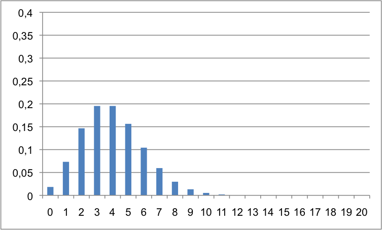 \(\lambda = 4\)
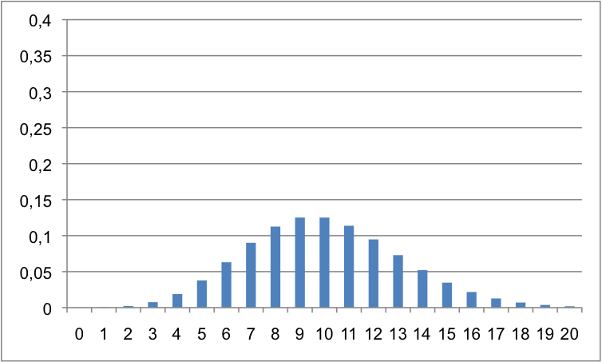 \(\lambda = 10\)
Loi géométrique¶
Définition. La variable aléatoire \(X\) suit une loi géométrique de paramètre \(p\), \(p\in [0,1]\) si \(X\) est à valeur dans \(\mathbb{N}^*\) et
On note \(X\sim \mathcal{G}(p).\)
Espérance, Variance. Soit \(X \sim \mathcal{G}(p)\), alors
\(\mathbb{E}[X] = 1/p\)
\({\rm Var}[X] = (1-p)/p^2\).
Fonction de répartition. Soit \(X \sim \mathcal{G}(p)\), alors la
fonction de répartition de la variable aléatoire \(X\) vaut:
\(F_X(k)=\mathbb{P}(X\leqslant k) = 1-(1-p)^k\)
Utilisation. (Un problème de temps d’attente)
Considérons une épreuve de Bernoulli avec une probabilité de succès \(p\).
On renouvelle cette épreuve de manière indépendante jusqu’au premier
succès. On appelle \(X\) la variable aléatoire donnant le rang du premier
succès. Alors \(X\) suit la loi géométrique \(\mathcal{G}(p)\).
Exemple. Soit un joueur jouant tous les matins à un jeu de hasard.
Le jeu a toujours la même probabilité 1/10 de succès. Quelle est la
probabilité qu’il n’ait rien gagné au bout de 3 jours ?
Soit \(X\) la variable aléatoire donnant le jour du premier succès du
joueur.
\(\mathbb{P}(X=1)=\frac{1}{10}.(\frac{9}{10})^0=0,1\)
\(\mathbb{P}(X=2)=\frac{1}{10}.(\frac{9}{10})^1=0,09\)
\(\mathbb{P}(X=3)=\frac{1}{10}.(\frac{9}{10})^2=0,081\)
Alors la probabilité pour qu’il n’ait rien gagné au bout de 3 jours vaut
\(1-\mathbb{P}(X=1)-\mathbb{P}(X=2)-\mathbb{P}(X=3)\), soit \(0,729\).
On aurait également pu calculer directement
\(1-F_X(3)=(1-\frac{1}{10})^3\), ce qui donne (heureusement) le même
résultat.
Allure des lois géométriques.
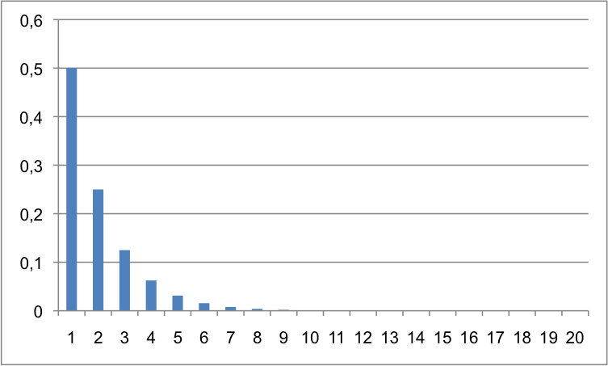 \(p=0,5\)
Diagramme représentant la probabilité \(\mathbb{P}(X=k)\) en fonction de \(k\) pour une variable aléatoire \(X\) suivant la loi géométrique \(\mathcal{G}(p)\), avec p=0,5.
Remarque. La loi géométrique est une version discrétisée de la loi exponentielle. Ce sont toutes les deux des lois “sans mémoire”.
Le cas continu¶
Lorsqu’une variable aléatoire est à valeur dans un ensemble continu
(dans un intervalle de \(\mathbb R\)), elle prend alors une infinité non
dénombrable de valeur. On ne peut alors plus décrire dans quelle
proportion la variable aléatoire prendra chacune de ces valeurs, et
déterminer de cette façon sa loi.
Il est en revanche possible de décrire la loi à travers la donnée d’une
fonction de densité, c’est-à-dire d’une fonction continue (ou
éventuellement continue par morceaux), positive et d’intégrale sur
\(\mathbb R\) égale à 1.
Définition. On dit que \(X:\Omega\to \mathbb R\) est une variable
aléatoire de densité \(f_X\) telle que :
Fonction de répartition. On notera qu’en conséquence, si \(X:\Omega\to \mathbb R\) est une variable aléatoire de densité \(f_X\) alors sa fonction de répartition \(F_X\) est donnée par :
pour tout \(x\) appartenant à \(\mathbb R\). En particulier, \(F_X\) est une
primitive de \(f_X\).
Remarque. Ici (et dans la suite), il faut comprendre les intégrales
\(\int_{-\infty}^{b} f_X(y){\rm d}y,\ \int_{a}^{+\infty} f_X(y){\rm d}y\text{ et }\int_{-\infty}^{+\infty} f_X(y){\rm d}y,\)
comme
\(\lim_{a\to -\infty},\ \lim_{b\to +\infty},\ \lim_{a\to -\infty,\ b\to +\infty} \int_{a}^{b} f_X(y){\rm d}y.\)
Éspérance et variance d’une variable aléatoire continue¶
Définition. Soit \(X\) une variable aléatoire continue de densité \(f_X\). On appelle espérance de \(X\) la quantité définie par
lorsqu’elle existe.
Définition. Soit \(X\) une variable aléatoire continue de densité
\(f_X\). On appelle variance de \(X\), et on note \({\rm Var}[X]\) la quantité
:
lorsqu’elle existe.
Propriété 1.3. Les propriétés valables dans le cas discrets sont aussi vérifiées dans le cas continu:
Linéarité de l’espérance : pour toute v.a. \(X\) et \(Y\), pour tout réels \(\lambda\) et \(\mu\): \(\mathbb E[\lambda X + \mu Y] = \lambda \mathbb E[X] + \mu \mathbb E[Y].\)
La variance n’est, elle, pas linéaire : pour toute v.a. \(X\) et tout réel \(\lambda\) \({\rm Var}(\lambda X) = \lambda^2 {\rm Var}(X).\)
Mais dans le cas de deux variables aléatoires indépendantes \(X\) et \(Y\) : \({\rm Var}(X+Y) = {\rm Var}(X) + {\rm Var}(Y)\)
On a \({\rm Var}(X) = \mathbb E[(X-\mathbb E[X])^2] = \mathbb E[X^2] - (\mathbb E[X])^2.\)
Les lois continues usuelles¶
Loi uniforme¶
Définition. Soient \(a,b\), deux réels tels que \(a<b\). On dit que \(X\) suit une loi uniforme sur l’intervalle \([a,b]\) et on note \(X\sim \mathcal{U}([a,b])\) si \(X\) est à valeur dans \([a,b]\) et admet une densité \(f_X\) donnée par :
\(f_X(x) = \frac{1}{b-a}\mathbf{1}_{[a,b]}(x),\) pour tout \(x\) appartenant à \(\mathbb R\).
Rappel. On note \(\mathbf{1}_{[a,b]}(x)\) pour un intervalle \([a,b] \subset \mathbb R\) la fonction qui vaut: $\(f(x)= \left\lbrace\begin{array}{ll} 1&\text{ pour } x \in [a,b] \\ 0&\text{ pour } x \not\in [a,b] \end{array} \right.\)\( On l’appelle la **fonction indicatrice** de \)[a,b]$.
Proposition. Soient \(a,b\), deux réels tels que \(a<b\). Soit \(X \sim \mathcal{U}([a,b])\). Alors :
\(\mathbb{E}[X] = \dfrac{a+b}{2}\)
\({\rm Var}[X] = \dfrac{(b-a)^2}{2}\).
Allure de la loi uniforme.[6] 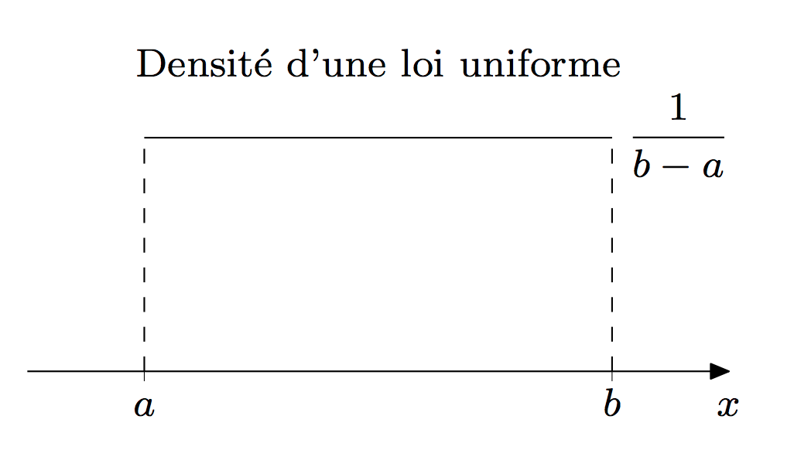 Densité uniforme
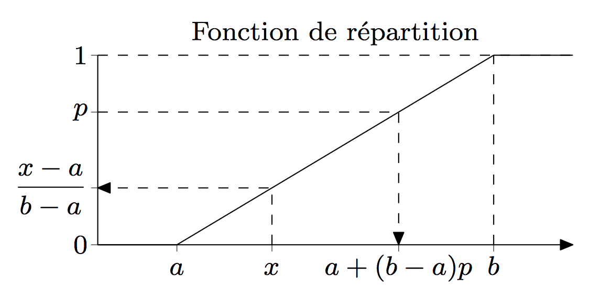 Répartition uniforme
Loi exponentielle¶
Définition. On dit que la variable aléatoire \(X\) suit une loi exponentielle de paramètre \(\lambda\) (\(\lambda>0\)) si \(X\) est à valeur dans \(\mathbb R^+\) et admet une densité \(f_X\) donnée par :
\(f_X(x) = \lambda e^{-\lambda x} \mathbf{1}_{\mathbb R^+}(x).\)
Notation. On note \(X \sim \mathcal{E}(\lambda)\).
Proposition. Soit \(X \sim \mathcal{E}(\lambda)\). Alors
\(\mathbb{E}[X] = \dfrac{1}{\lambda}\)
\({\rm Var}[X] = \dfrac{1}{\lambda^2}\).
Fonction de répartition. \(F(x)= 1-e^{-\lambda x}\) En effet: \(\begin{aligned} F(x)&=\mathbb{P}(X\leqslant x)\\ &= \int_{-\infty}^x f_X(y){\rm d}y\\ &= \int_{0}^x \lambda e^{-\lambda y}{\rm d}y\\ &= [-e^{-\lambda y}]_{y=0}^{y=x}\\ &= e^{-\lambda 0}-e^{-\lambda x}\\ &= 1-e^{-\lambda x} \end{aligned}\)
Utilisation. La loi exponentielle est une loi “sans mémoire” ou
“sans vieillissement” : cela se traduit par le fait qu’un phénomène
suivant une telle loi a autant de chances de se produire sur un laps de
temps donné après l’instant \(t_{1}\) qu’après l’instant \(t_{2}\). La
probabilité qu’il survienne aujourd’hui sachant qu’on l’attend depuis un
siècle est la même que si on l’attendait depuis un jour.
La loi exponentielle est souvent utilisée pour prédire des durées de vie
(par exemple de composants électroniques).
Allure de la loi uniforme.[7]
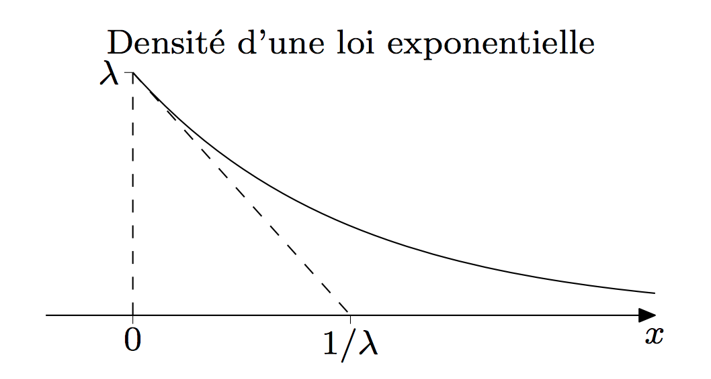 Densité
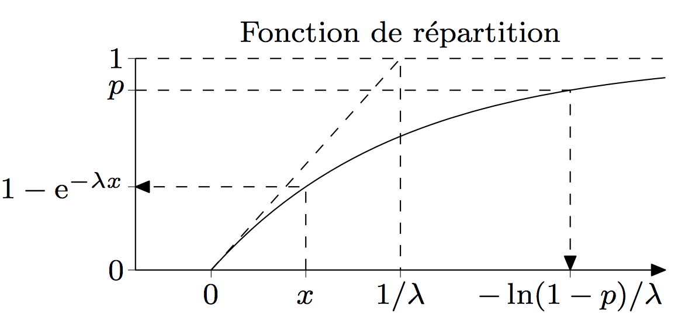 Répartition
Exemple. La durée de vie d’un matériel électronique exprimée en
jours suit une loi exponentielle de paramètre \(\lambda = 0,004\). Quelle
est la probabilité qu’il fonctionne encore 300 jours après sa
fabrication ?
D’abord, la formule (fonction de répartition puisqu’on cherche un
cumul).
\(\mathbb{P}(X > 300) = 1-\mathbb{P}(X < 300) = 1-(1-e^{-0,004. 300})= e^{-1,2}=0,301\)
Remarque. Si \(X\) est une variable de loi exponentielle de paramètre \(1\), pour tout \(\lambda > 0\), la loi de \(\dfrac{X}{\lambda}\) est la loi exponentielle de paramètre \(\lambda\).
Loi normale¶
Définition. On dit que \(X\) suit une loi normale de paramètre \(\mu\) et \(\sigma\) (\(\mu\) un réel et \(\sigma\) un réel positif), et on note \(X\sim \mathcal{N}(\mu,\sigma)\), si \(X\) est à valeur dans \(\mathbb R\) et admet une densité \(f_X\) donnée par :
\(f_X(x) = \frac{1}{\sqrt{2\pi \sigma}}e^{-\frac{1}{2\sigma}(x-\mu)^2}, \quad \forall x \in \mathbb R.\)
Lorsque \(\mu=0\) et \(\sigma=1\), on dit que \(X\) suit une loi normale
centrée réduite.
Remarque. On trouve parfois une notation avec \(\sigma^2\) (la
variance) au lieu de \(\sigma\) (l’espérance): cela ne change rien au
fonctionnement de la loi, il s’agit juste d’un choix de notations. On
aura alors \(X\sim \mathcal{N}(\mu,\sigma^2)\).
Proposition. La loi normale est entièrement caractérisée par sa
moyenne et sa variance, en particulier :
\(\mathbb E[X] = \mu\)
\({\rm Var}[X] = \sigma^2\).
Allure de la loi normale.[8] 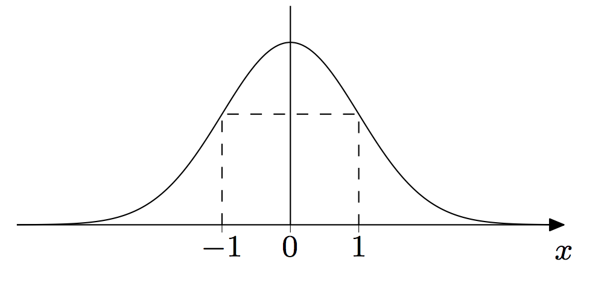 \(\text{Densité de la loi }\mathcal{N}(0,1)\) 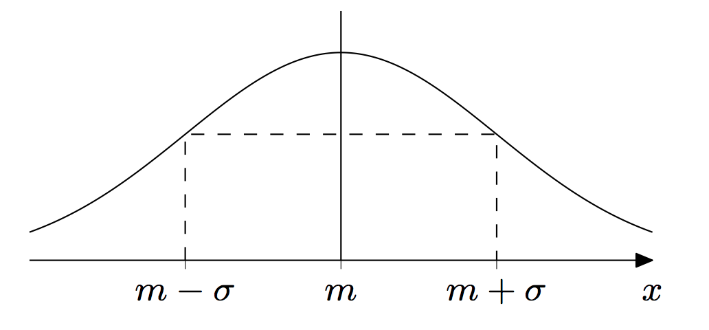 \(\text{Densité de la loi }\mathcal{N}(m,\sigma)\)
Influence de \(\mu\) et \(\sigma\) 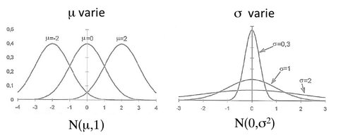
Répartition 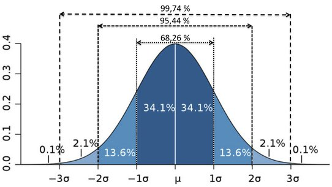
Remarque. Il n’existe pas de formule explicite pour la fonction de
répartition de la loi normale. On peut cependant l’approcher, et des
valeurs précises sont facilement disponibles sous forme de tableau.
La loi normale, ou de Gauss, possède les propriétés suivantes :
Propriété 1.4.
Soient \(X\) et \(Y\) deux variables aléatoires indépendantes suivant une loi normale de paramètres respectivement \((\mu_X,\sigma_X)\) et \((\mu_Y,\sigma_Y)\). Alors, la variable aléatoire \(X+Y\) suit elle aussi une loi normale d’espérance \(\mu_X + \mu_Y\) et de variance \(\sigma_X^2+\sigma_Y^2\) :
\(X+Y \sim \mathcal{N}(\mu_X+\mu_Y,\sqrt{\sigma_X^2+\sigma_Y^2}).\)
Soit \(X\) une variable aléatoire centré réduite, \(\mu\) un réel et \(\sigma\) un réel positif alors \(\mu + \sigma X \sim \mathcal{N}(\mu,\sigma).\)
De façon symétrique, soit \(X\) une variable aléatoire suivant la loi normale \(\mathcal{N}(\mu,\sigma)\), \(\mu\) un réel et \(\sigma\) un réel positif, alors la variable aléatoire \(Z=\dfrac{X-\mu}{\sigma}\) suit la loi normale centrée réduite: \(Z \sim \mathcal{N}(0,1).\)
La variable aléatoire \(Z\) s’appelle la variable aléatoire centrée réduite associée à \(X\). En fait, pour faire des calculs effectifs de probabilité, grâce à ce résultat, on commencera systématiquement par se ramener d’une loi normale quelconque \(\mathcal{N}(\mu,\sigma)\) à la loi normale centrée réduite \(\mathcal{N}(0,1)\). On pourra alors utiliser la table des valeurs pour cette loi.
Utilisation. La loi normale est très probablement la plus couramment
retrouvée, dans une multitude de phénomènes. Elle tient donc une place
fondamentale en théorie des probabilités et en statistique. Cela tient
notamment du fait que la loi normale est la loi limite moyenne, comme
nous le verrons grâce à la dernière partie, dune suite infinie
d’épreuves répétées indépendantes.
En pratique elle sert à modéliser les effets additifs de petits
phénomènes aléatoires indépendants répétés souvent.
Elle est donc la loi limite des lois binomiales et de poisson pour un
très grand nombre d’essais. On utilisera les deux approximations
suivantes:
\(\begin{array}{|c|c|c|} \hline \text{Loi de }X & \text{Loi approchée de }X & \text{Conditions requises}\\ \hline & & \\ \mathcal{B}(n,p) & \mathcal{N}(np,\sqrt{np(1-p)}) & n \geqslant 30,\quad np \geqslant 10, \quad n(1-p) \geqslant 10\\ & & \\ \mathcal{P}(\lambda) & \mathcal{N}(\lambda,\sqrt{\lambda}) & \lambda \geqslant 10\\ & & \\ \hline \end{array}\)
Loi du khi-deux¶
Introduction. Soient \(X_{1}, . . . , X_{n}\) des variables aléatoires
indépendantes de même loi \(\mathcal{N}(0,1)\). Posons
\(\chi^2=\sum_{k=1}^nX_{i}\)
Par définition, la variable aléatoire \(\chi^2\) suit une loi du khi-deux
à n degrés de liberté (abréviation d.d.l.). On note cette loi
\(\chi^2(n)\).
Définition. On dit qu’une variable aléatoire \(X\) suit une loi du
khi-deux à \(n\) degrés de liberté si \(X\) est à valeur dans \(\mathbb R^+\)
et admet une densité \(f_X\) donnée par :
\(f_X(x) = \frac{1}{2^{n/2}\Gamma(n/2)}x^{n/2-1}e^{-x/2}, \text{pour tout réel positif } x\)
et où \(\Gamma\) est la fonction gamma donnée par :
\(\Gamma(n) = (n-1)!, \forall n \in \mathbb N^*.\)
Notation. On note \(X\sim \chi^2(n)\)
Allure de la loi du \(\chi^2(\nu)\).[9]
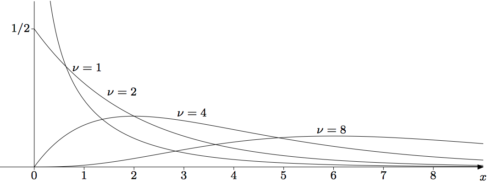
Proposition. Soit \(X \sim \chi^2(n)\). Alors
\(\mathbb{E}[X] = n\)
\({\rm Var}[X] = 2n\).
Utilisation. Ne prenez pas peur ! Cette loi ne sera pas utilisée
directement dans les exercices de ce chapitre de probabilités, mais
c’est une loi très utile en statistique, car elle permet de tester
l’indépendance de plusieurs variables ou encore de tester l’adéquation
d’une série de données à une loi de probabilités.
Dans la pratique on utilise une table de valeurs de sa fonction de
répartition.
Loi des grands nombres et TCL¶
Théorème 1.1. Loi forte des grands nombres
Soient \(X_1,\ldots,X_n\), \(n\) variables aléatoires [v.a.] i.i.d.
d’espérance \(\mu\) et de variance \(\sigma^2\). Alors, la moyenne
arithmétique de ces variables aléatoires tend presque sûrement vers la
moyenne théorique \(\mu\) :
\(\lim_{n\to +\infty}\frac{1}{n}\sum_{i=1}^n X_i \to \mu,\ {\text{presque sûrement}}.\)
Par presque sûrement il faut comprendre que l’événement “la moyenne arithmétique ne tend pas vers la moyenne théorique” est de probabilité nulle.
Ce théorème nous dit que la moyenne arithmétique converge vers la moyenne théorique.
Théorème 1.2. Théorème central Limite
Soient \(X_1,\ldots,X_n\), \(n\) variables aléatoires i.i.d. d’espérance
\(\mu\) et de variance \(\sigma^2\). Alors,
\(\sqrt{n}.\frac{\frac{1}{n}\sum_{i=1}^n X_i -\mu}{\sigma}\to \mathcal{N}(0,1).\)
On utilisera fréquemment ce résultat de la manière suivante : si \(X_1,\ldots,X_n\) sont \(n\) v.a. i.i.d. alors on dira que pourra \(n\) suffisamment grand la v.a. \(\sqrt{n}.\frac{\frac{1}{n}\sum_{i=1}^n X_i -\mu}{\sigma},\) suit approximativement une loi \(\mathcal{N}(0,1)\). Entre autre, si \(Y\) est une variable aléatoire suivant une loi \(\mathcal{N}(0,1)\) alors pour tout \(x\in \mathbb R\): \(\mathbb{P}\left(\sqrt{n}.\dfrac{\frac{1}{n}\sum_{i=1}^n X_i -\mu}{\sigma} \leqslant x\right) \approx \mathbb{P}(Y\leqslant x).\)
[1] Cette introduction est reprise du cours: “Introduction au Calcul des Probabilités” de Charles SUQUET, Professeur à l’Université Lille I
[2] Tiré du site de Bo Allen: http://boallen.com/random-numbers.html
[3] Exemple tiré d’un témoignage du site Random.org
[4] Image tirée de “Les inattendus mathématiques” de Jean-Paul DELAHAYE
[5] “Les inattendus mathématiques” de Jean-Paul DELAHAYE
[6] Images tirées d’un cours “Lois de probabilité usuelles” de l’Université de Poitiers
[7] Images tirées d’un cours “Lois de probabilité usuelles” de l’Université de Poitiers
[8] Images tirées d’un cours “Lois de probabilité usuelles” de l’Université de Poitiers
[9] Images tirées d’un cours “Lois de probabilité usuelles” de l’Université de Poitiers